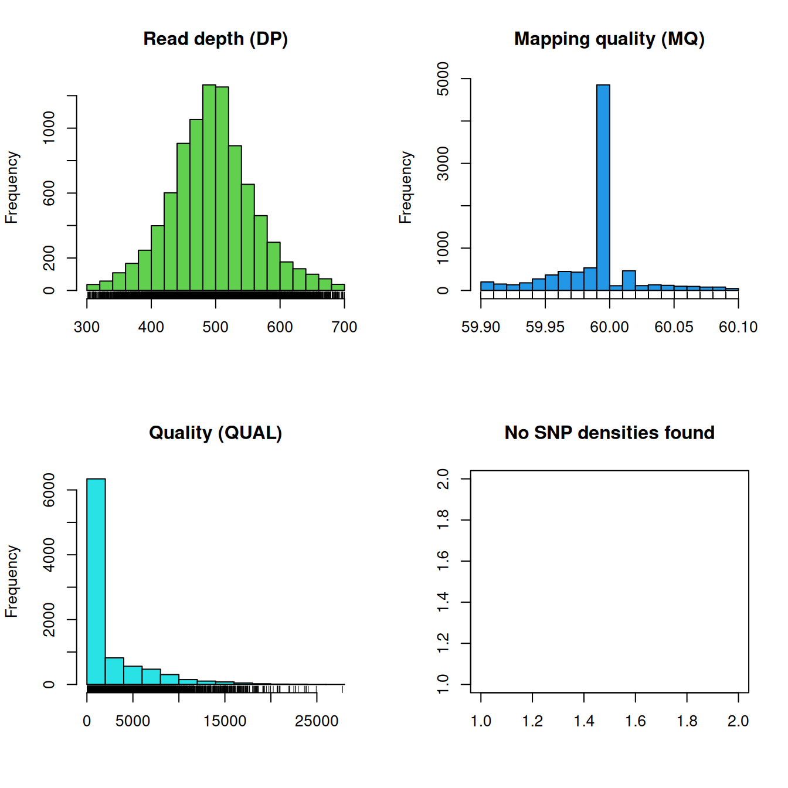
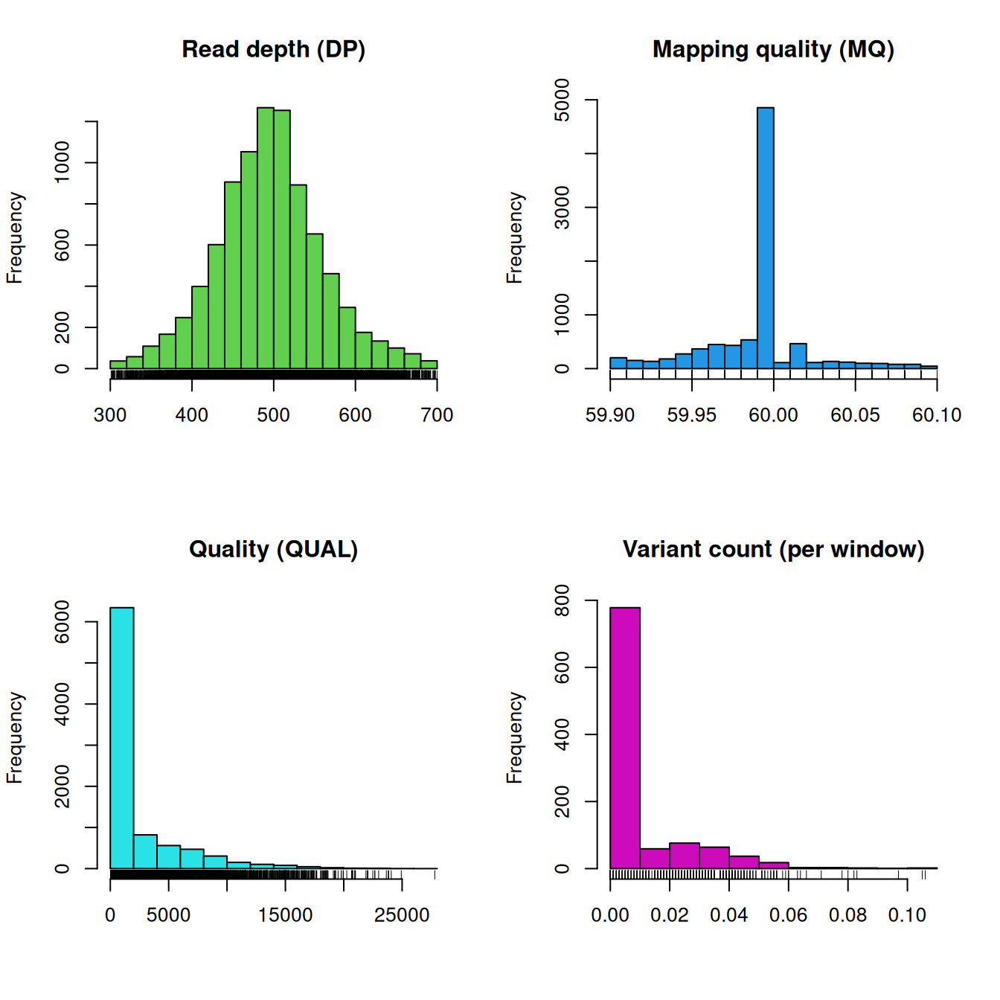
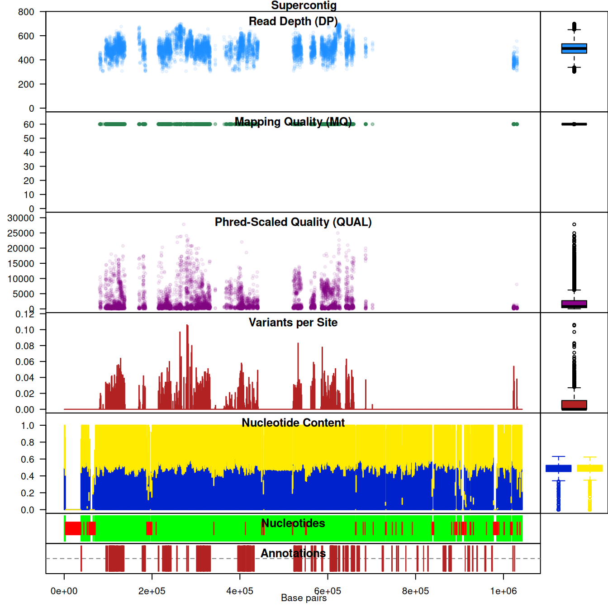

vcfR documentation
byBrian J. Knaus and Niklaus J. Grünwald
A quick introduction
vcfR is a package intended to help visualize, manipulate and quality filter VCF data.
Preliminaries
Input files frequently present challenges to analysis. A common problem I encounter is that chromosome names are not standardized among VCF, FASTA and GFF files. This presents work for the analyst. I suggest reading these files into R, syncronizing the names in R and then proceeding with downstream analyses. The other option I see is to create a set of files where the data is identical to the initial files, but the names have been syncronized. This later choice results in the creation of files which are largely redundant, something I feel is unnecessary.
Memory use is another important consideration when using vcfR. A strength of R is that it was typically intended to read in entire datasets into memory. This allows for visualization, manipulation and analyses to be performed on the entire dataset at once. The size of genomic datasets, particularly the VCF data, present a challenge in that they may be too large for practical use in R. This presents us with the challenge of reading enough data into memory so that we can explore a large amount of it, but not so much that we exceed our existing resources. It has been my experience that R does not perfomr well when memory use approaches 1 GB of RAM, so simply investing in a workstation with a large amount of memory may not be a solution. (This may change in the future as R is under continual development.) My solution to finding this balance is to work on single chomosomes. Actually, the ‘chromosomes’ in my projects are typically supercontigs, scaffolds or contigs. This is one situation where not having complete chromosomes actually can be an advantage.
Data input
The vcfR package is designed to work with data from VCF files. The use of a sequence file (FASTA format) and an annotation file (GFF format) can provide helpful context, but are not required. We’ll begin our example by locating the data files from the package ‘pinfsc50.’
pkg <- "pinfsc50"
vcf_file <- system.file("extdata", "pinf_sc50.vcf.gz", package = pkg)
dna_file <- system.file("extdata", "pinf_sc50.fasta", package = pkg)
gff_file <- system.file("extdata", "pinf_sc50.gff", package = pkg)Then read in the VCF file with vcfR.
library(vcfR)
vcf <- read.vcfR( vcf_file, verbose = FALSE )The function read.vcfR() takes the filename you specify and reads it into R where it is stored as a vcfR object. The vcfR object is an S4 class object with three slots containing the metadata, the fixed data and the genotype data. More information on VCF data can be found in the vignette ‘vcf data.’ This object provides a known organization for the data so that downstream functions can easily access it.
Genomic reference sequence files are typically in FASTA format files. These can be read in using the package ape.
dna <- ape::read.dna(dna_file, format = "fasta")Annotation files (we currently support GFF), files which contain coordinates for annotations such as start and end points of genes, are tabular and can be read in with typical R functions.
gff <- read.table(gff_file, sep="\t", quote="")In my experience, GFF files typically to not surround text with quotes. This can present a challenge to reading these files into R. Disabling quotes in the call to read.table() typically helps handle this.
Once the data has been read into memory, modifications can be made to chromosome names or any other inconsistencies and one can proceed.
vcfR was designed to work on an individual chromosome, supercontig or contig, depending on the state of your genome. Reading an entire genome into memory may present a technical challenge when there is a lot of data. For example, when the genome is large or there are a lot of samples. Attempting to read in lage datasets to memory may exhaust all available memory and result in an unresponsive computer. Working on chromosomes appears to be a natural way to decompose this problem. Once you have read an object into R (e.g., an annotation or sequence file) you may need to subset it to data for a single chromosome, if necessary.
Creating chromR objects
Once the data are in memory we can use it to create a chromR object with the function create.chromR(). The create.chromR() function creates a new chromR object and populates it with data you provided it.
library(vcfR)
chrom <- create.chromR(name='Supercontig', vcf=vcf, seq=dna, ann=gff)## Names in vcf:## Supercontig_1.50## Names of sequences:## Supercontig_1.50 of Phytophthora infestans T30-4## Warning in create.chromR(name = "Supercontig", vcf = vcf, seq = dna, ann = gff):
## Names in variant data and sequence data do not match perfectly.
## If you choose to proceed, we'll do our best to match the data.
## But prepare yourself for unexpected results.## Names in annotation:## Supercontig_1.50## Initializing var.info slot.## var.info slot initialized.Note that the names of our three data sources are not identical. This results in a warning. When we examine the output we see that the name in the VCF file is ‘Supercontig_1.50,’ while the name in the FASTA is ‘Supercontig_1.50 of Phytophthora infestans T30-4.’ We know that these are synonyms so we can ignore the warning and proceed.
The parameter ‘name’ is a name you can assign to your object. This information is used when plotting the chromR object. The vcfR object should be of class vcfR, which was most likely created with the function read.vcfR(). This object is inserted into the chrom object with the function vcfR2chromR(). The parameter ‘seq’ should be a DNAbin object (see the R package ape) with one sequence in it. This sequence will be inserted into the chromR object with the function seq2chromR(). If a sequence is not provided, seq2chromR() will infer the length of your chromosome from the maximum position in the vcfR object. The parameter ‘ann’ should be a GFF and be of class data.frame. These can typically be read in with base R functions such as read.table(). This table will then be inserted into the chromR object by ann2chromR(). This function will check to see if columns 4 and 5 (“start” and “end”) are numeric. If not, it will try to recast them as so.
Processing chromR objects
Once the chromR object has been created a few processing steps are needed. First, you may want to get a quick look at some of your data. This can be done with the plot function.
plot(chrom)
The distribution of read depth (DP) stands out. Presumably, there is some base ploid level at which most of each genome is sequenced at. Here we see a peak, which may represent that base ploid region, but we also see a long tail which may represent copy number variants. Because genotypers typically expect a constant level of ploidy, variant calls in copy number variants may be suspect. We can see that mapping qualities (MQ) are all rather peaked around a value of 60. Because of this, if we would like to filter on this parameter we now know that we would have to employ a narrow threshold. Interpretation of the qualities (QUAL) appears less straightforward and may be clinal from a value of zero. You may conclude that this is not an ideal parameter to filter on. No SNP densities are found at this point because this data results from windowing analyses performed by proc_chromR() (see below). Filtering on other parameters may reveal a more straight forward path.
Note that VCF data created by different variant calling software may or may not have these fields or their ranges may be different. For example, here the mapping quality is peaked at 60. Other softwares may create files where mapping quality is peaked at 20 or some other value. This is why it is important to visualize the distribution of your data so you understand its properties.
We can use the masker() function to try to filter out data that we do not have high confidence in. The masker() function uses quality, depth and mapping quality to try to select high quality variants. See ?masker for default values. When using masker, variants deemed to be of low quality are not deleted from the dataset. Instead, a logical vector is created to indicate which variants have or have not been filtered. This maintains the geometry of the data matrices throughout the analyisis and allows the user to easily undo any changes.
chrom <- masker(chrom, min_QUAL = 1, min_DP = 300, max_DP = 700, min_MQ = 59.9, max_MQ = 60.1)
plot(chrom)
Once we’re satisfied with which variants we want to consider to be of high quality we can process the chromR object with proc.chromR(). This function calls several helper functions to process the variant, sequence and annotation data for visualization.
The function regex.win() defines rectangles for where called sequence (A, C, G and T) occur as well as where ambiguous nucleotides occur (N) which are used later for plotting. This function also defines rectangles for annotated features, which are also for plotting.
The function var.win() performs windowing analyses on the data. Currently it summarizes variant count per window as well as G/C content per window.
chrom <- proc.chromR(chrom, verbose=TRUE)## Nucleotide regions complete.## elapsed time: 0.24## N regions complete.## elapsed time: 0.226## Population summary complete.## elapsed time: 0.159## window_init complete.## elapsed time: 0.001## windowize_fasta complete.## elapsed time: 0.149## windowize_annotations complete.## elapsed time: 0.011## windowize_variants complete.## elapsed time: 0.001plot(chrom)
Now that we’ve processed our chromR object, we have variant counts per window. We’re also ready to move on to more complex plots.
Visualizing data
At this point we’ve input three types of data (variant, sequence and annotation), inserted them into a chromR object, masked variants we feel were not of high quality and processed some summaries of these data. We can now move on to visualizing these data.
The function chromoqc() uses the R function layout() to make composite plots of the data. These plots can include barplots as well as scatterplots which have chromosomal coordinates.
chromoqc(chrom, dp.alpha=20)
We can also zoom in on a feature of interest by using the xlim parameter.
chromoqc(chrom, xlim=c(5e+05, 6e+05))Output of data
One of the goals of the package vcfR is to help investigators understand and explore their data. Once they’ve gained an understanding of this data, they will likely want to act upon it. One way to act upon this understanding is to use their aquired comprehension of their data to filter it to what they feel is of adequate quality.
Output to VCF file
Within the framework of the package vcfR, the filtering and output of variants determined to be of adequate quality can be accomplished with the function write.vcf(). This function takes a vcfR object and optionally subsets it using the mask, created in previous steps, and outputs it to a (gzipped) VCF file. This file should be usable by all VCF compliant softwares for downstream analyses.
Conversion to other R objects
Conversion of vcfR and chromR to objects supported in other R packages is covered in the vignette ‘Converting data.’
Copyright © 2017 Brian J. Knaus. All rights reserved.
USDA Agricultural Research Service, Horticultural Crops Research Lab.